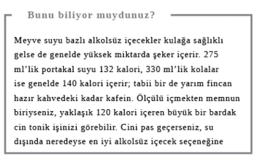
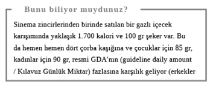
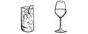
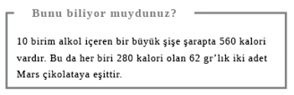
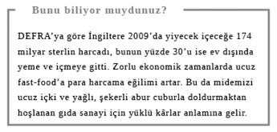

Dışarı Çıkılan Akşamlar
İyi dostlar eşliğinde dışarıda geçen bir gece, güzel bir restoranda yenen yemek, bir filme veya gösteriye gitmek hayatın zevkleridir; özellikle de işte stresli bir gün geçirdiyseniz, ev işleriyle boğuştuysanız veya huysuz çocuklarla uğraştıysanız. Önünüzde iple çektiğiniz keyifli saatler olmasının morale ne kadar iyi geldiğini, iyi bir sosyal çevrenin sıkıntıyı dağıttığını veya yeni deneyimlerin ve durumların beyni aktif tuttuğunu bilmek için psikolog olmak gerekmez. Ne var ki dışarıda geçen geceler de bir süre sonra monotonlaşabilir. Buna işten sonra sünger gibi içmek, bolca abur cubur yemek ya da aynı yüzlerden ve yerlerden sıkılmak da dâhilse fiziksel ve zihinsel sağlığınız olumsuz etkilenebilir. Oysa yiyecek, içecek ve sosyal yaşam konusunda birkaç basit kurala uyarak, günlük daralmaların ardından değerli özgürlük saatlerinizin tadını daha iyi çıkarabilirsiniz.
Ne Yapmalı?
Çoğumuz iş günümüzü bilgisayar ekranı karşısında oturarak geçirdiğimiz için, akşamları bulabildiğimiz serbest vakti en iyi şekilde değerlendirmemiz önemlidir. Bu arkadaşlarla buluşmak da olabilir, yepyeni bir şey denemek de; olasılıklar sonsuz.
Aynı şeyi mi yapmalı, farklı bir şey mi?
“Hedonistik alışma” ABD’li mutluluk araştırmacısı Ken Sheldon ile Sonja Lyumbomirsky’nin bulduğu pek hoş bir psikolojik jargon kalıbı. Anlamı ise bir şeyden çok hoşlansanız bile bir süre sonra ondan sıkılacağınızdır. Onlara göre yeni bir hobi edinmek ya da bir kulübe katılmak gibi olumlu değişiklikler yapan insanlar, maaşa zam almak veya yeni bir araba satın almak gibi koşullarında önemli değişiklikler olan insanlara kıyasla daha uzun süre mutlu kalıyor. İkincisinin heyecanı eninde sonunda söner ama sürekli yeni deneyimlere, insanlara ve fikirlere maruz kalmak, zihni uyarır ve bize yeni zevk kaynakları yaratır. Dolayısıyla tiyatroya gidip oyun izlemeyi seviyorsanız, biraz da müzikal ya da operayı deneyebilir, hatta bir tiyatro kulübüne yazılabilirsiniz. Düşünsenize bir kitap okuma grubuna katılarak sadece bir janrı ya da yazarı keşfetmekle kalmaz, aynı zamanda yeni arkadaşlar da edinebilirsiniz. Alternatif olarak triatlon eğitimi alarak forma girebilir, yeni bir spora başlayabilir, kendinize yeni hedefler belirleyebilirsiniz.
Yanıt: Farklı bir şey
Eski arkadaşlar mı, yeni arkadaşlar mı?
Eski dostlarınıza düşkünseniz ama yeni insanlarla, hatta yeni bir partnerle tanışmak istiyorsanız, The Single Trap / Bekar Tuzağı’nın yazarı psikolog Andrew G. Marshall’ın farklı türdeki arkadaşlık grupları konusundaki ilginç yaklaşımına kulak verebilirsiniz. Ona göre “Bağlanma” grupları “kendimiz gibi insanlardan” oluşan ve destek, güvence ve şefkat bulmak için daima yüzümüzü döndüğümüz, yakın eski dostlar grubudur. Tıpkı Sex and the City’deki kadınlar gibi. Ancak bu tip gruplar yapı itibariyle dışarıya kapalı olabilir ve sizi yeni biriyle tanışmaktan alıkoyabilir. “Köprü” gruplarsa farklıdır. Onları, örneğin, akşam kurslarında, spor kulüplerinde veya çocuklarınızın okulunda bulabilirsiniz. Onlar var olan gruplar arasında köprü oluşturur ve sosyal çevrenizi genişletmek istediğinizde yeni gruplardan yararlanmanız için size harika bir fırsat sunarlar.
Yanıt: Yeni arkadaşlar

Ne Yiyip İçmeli?
İçki içmek ya da sinemaya gitmek için dışarı çıktıysanız ve canınız biraz atıştırmak istiyorsa seçenekler her zaman sağlıklı olmayabilir. Hiç korkmayın, damak zevkinden ve sağlıktan ödün vermeden yiyip içebileceğiniz pek çok şey mevcut.
Mideyi tutması için sandviç mi yemeli, yoğurt mu?
İşten sonra iş arkadaşlarınızla ayaküstü bir şeyler içmeye gidip kendinizi saatler sonra aynı yerde bulduğunuz olduysa, boş mideyle içki içmenin ardından gelen halsizlik bir yana, ertesi sabah kendinizi nasıl hissedeceğinizi de iyi bilirsiniz. Sağlık uzmanları alkol almadan önce mideyi tutması için bir şeyler yemenizi öneriyor. Dolayısıyla sandviç gayet uygun (tabii tam tahıllı ekmek arasına jambonlu domatesli gibi basit bir şeyi tercih ettiğiniz sürece).
İşte bu gibi durumlar için el altında kraker ya da tuzsuz kuruyemiş gibi şeyler bulundurmak iyidir. Kullanabileceğiniz bir buzdolabı varsa bir bardak süt veya biraz yoğurt da nispeten az kaloriyle midenize ucuza altlık yapabilir. Süt ürünlerinin içindeki yağlar oldukça yavaş sindirildiğinden, süt ve yoğurt, sandviçten daha uzun süre tok tutar. Probiyotik yoğurtlar sindirime yardımcı bile olabilir.
Yanıt: Süt veya yoğurt

Tatlı patlamış mısır mı, tuzlu mu?
Bazı sinema zincirlerinde satılan yiyecekler diyetisyenlerin kâbusudur: Dondurma, şeker, gazlı içecekler, yağa ve şekere bulanmış patlamış mısırlar, mısır cipsleri ve peynir sosları, hem de kocaman porsiyonlar halinde… Patlamış mısır ısınınca genleşen mısırdan yapılır. Bolca lif içerir, kalorisi nispeten düşüktür ve oldukça da doyurucudur. Ancak tereyağı, sıvı yağ, tuz veya şekerle kaplanınca tam bir gıda afetine dönüşür. Yine de dayanamıyorsanız, aşağıdaki bilgilere kendinizi hazırlayın. Bir sinemanın internet sitesine göre büyük boy kutuda patlamış tatlı mısır 869 kalori, 29 gr yağ ve 0,1 gr tuz içeriyor. Tuzlusu ise biraz daha az, 812 kalori, yaklaşık aynı miktarda yağ ve 4 gr tuz içeriyor ki bu da günlük önerilen tuz miktarının neredeyse tamamı. Tüm bunların içinde en az kötü olan seçenek, yaklaşık 360 kalori ve 13 gr yağ içeren küçük boy patlamış tuzlu mısır.
Film izlerken bir şeyler atıştırmayı seviyorsanız, muzırların cazibesine kapılmak yerine kendi atıştırmalıklarınızı götürerek paradan da bolca tasarruf sağlayabilirsiniz. Örneğin, küçük bir çikolata (tercihan yüzde 70 ve üstü kakao katı maddesi içeren) veya küçük bir paket şeker ya da kuru üzüm, bir şişe gazlı içecek ya da küçük bir kutu meyve suyu. Çocuklara bu alışkanlığı kazandırırsanız, sinemaya gittiklerinde abur cubur için eteğinize yapışmayı bırakırlar.
Yanıt: Küçük boy patlamış tuzlu mısır

Kuruyemiş mi, cips mi?
Barda bir şeyler atıştırmak istediğinizde en iyisi kuruyemiş midir, cips mi? Yerfıstığı daha fazla protein ve yağ içerdiği için, midenizi daha uzun süre tutar ama bedeli neredeyse iki kat kaloridir. Küçük bir paket yerfıstığında yaklaşık 300 kalori ve 25 gr yağ vardır ama 35 gr ambalajlı cips sadece 184 kalori ve 11 gr yağ içerir. Cipsin az yağlısını veya fırınlanmışını bulabilirseniz, yağ oranını ciddi ölçüde azaltmış olursunuz. Kuruyemiş de cips de yağlıdır elbette, barda satılmalarının nedeni de budur; susattıkları için daha çok içmenizi sağlarlar. Bir paket cipste yaklaşık 0,4 gr, yerfıstığında ise 0,6 gr tuz vardır.
Yanıt: Cips

Siyah zeytin mi, yeşil mi?
İştah açıcı küçük atıştırmalıklar arasında zeytin, tekli doymamış yağ oranının yüksekliği, az miktarda E vitamini ve başka besin maddeleri içermesi sayesinde oldukça sağlıklıdır. Yeşil zeytin siyahtan daha az olgun, dolayısıyla daha az kalorili ve yağlıdır. 10 adet yeşil zeytin yaklaşık 30 kalori içerirken, 10 siyah zeytinin kalorisi 70’e kadar çıkabilir. Zeytinyağı içinde servis edilirse kalori alımı yükselir. Tuzlu su içindeyse susatır, bu yüzden yanında bir bardak su isteyin.
Yanıt: Yeşil
Şarap mı, cin tonik mi?
Devletin alınabilecek alkol miktarı yönetmeliklerini hepimiz biliyoruz: İngiltere’de kadınlar için alkol RDA’sı günde iki ila üç birim, erkekler içinse üç ila dört birimdir. Ancak favori içkilerimizin ne kadar kilo aldırıcı olduğunu net olarak bilmiyoruz. Bir içkinin içindeki kalori sayısı, ne kadar alkol içerdiğine bağlıdır ki bu da, ister şarap olsun ister bira, içkinin sertliğiyle ilişkilidir. Dolayısıyla önerilen alkol ve kalori miktarı sınırları içinde kalabilmek için biraz matematik hesabı yapmak gerekir. Bir birim alkol 56 kalori içerir. Küçük bir kadeh kırmızı, beyaz ve roze şarap (175 ml) yaklaşık iki birimdir, yani 110 kalori içerir. Kalorisiz bir tonikle bir ölçü cin (25 ml) bir birimdir ki bu da 56 kalori eder. Cin kırmızı şaraptan daha az “congener” (özdeş madde) içerir. Bunlar fermantasyon sırasında üretilen, bazı alkollü içeceklere koyu rengini veren ve içki sonrası rahatsızlıklara katkısı olduğu düşünülen maddelerdir.
Bira, üzüm şarabı ve elma şarabının alkol ve kalori miktarı, 330 ml’lik lager ya da bira için 1,7 birim ve yaklaşık 100 kalori; 568 ml’lik normal elma şarabı için üç birim ve yaklaşık 170 kalori olarak değişebilir. Likör gibi ilave şeker ya da kreması olan içkilerde kalori miktarı muazzam yükselir. Kısacası cin tonikten şaşmama iradesini sergileyebiliyorsanız, kalori ve alkol açısından en iyi seçenek budur.
Yanıt: Cin tonik
UZMAN GÖRÜŞÜ
Bir birim alkol, karaciğerin, kanda hiç kalmayacak şekilde bir saatte işlemden geçirebileceği alkol miktarıdır. Üç birim alkol içeren büyük bir kadeh (250 ml) şarap içerseniz, vücudunuzun onu sindirmesi yaklaşık üç saat sürer. Alkol Sağlık Birliği başkanı Profesör Ian Gilmore “Herkesin haftada en az iki günü alkolsüz geçmeli” diyor.

Buluşma Konusunda Öneriler
Aşkı arayan her bekârın bildiği gibi “hayallerin insanını” bulmanın en iyi yolu kendimizi dışarı atıp birileriyle çıkmaktan geçer. Bekârlar sahnesi bu kadar kalabalıkken güvenli flörtü garantilemek için birkaç basit kuralı izlemek iyi olabilir.
İlk randevu: İçki mi, akşam yemeği mi?
Anket organizasyonu YouGov’un yaptığı bir çalışmaya göre İngiltere’de insanların yaklaşık üçte biri, flört edecek birini bulmak için internet ya da özel reklam gibi bir araçtan yararlanıyor. Bunda tabii ki yanlış yok. Pek çok mutlu çift bu şekilde tanıştı ve tanışmaya da devam ediyor. Ne var ki ilişki danışmanları tanımadığınız biriyle ilk defa çıktığınızda yemeğe gitmekten kaçınmanız konusunda hemfikir. Böyle bir durumda hoşlanmadığınız, hatta kötü niyetli bulduğunuz biriyle kendinizi kapana sıkışmış gibi hissedebilirsiniz. Genel tavsiye görüşmeyi kısa tutma yönünde. Danışmanlar kadınların bilmedikleri bir ortamda kendilerini tecrit edilmiş halde bulmamaları için, normalde gittikleri bir bar gibi, aşina oldukları mekânlarda buluşmalarını ve bir arkadaşlarına gittikleri yeri, kaçta eve döneceklerini söylemelerini öneriyor.
Yanıt: İçki

Dokunmalı mı, dokunmamalı mı?
Kadınların kendine güvenen, yüksek statülü erkekleri, düşük statülü olanlara kıyasla daha çekici bulması şaşılacak şey değil. Evrimsel açıdan bakılırsa yüksek statülü erkeklerin daha iyi eş olma olasılıkları da yüksek. Yani özgüvenli olmaya çalışın beyler! Fransız psikolog Nicola Guéguen’in yürüttüğü deneyler, kadının koluna hafifçe dokunan erkeklerin çıkma ya da dans etme talebine olumlu tepki alma olasılıklarının, dokunmayanlara kıyasla daha fazla olduğunu ortaya koydu. Bunun nedenininse “dokunanları” dokundukları kişilerden daha baskın görmemiz olduğu düşünülüyor. Başka bazı deneyler de birinden bir şey isteyenlerin, istedikleri kişiye dokunmaları halinde istediklerini almalarının daha olası olduğunu gösteriyor. Kısacası birini çekici buluyorsanız koluna şöyle bir dokunmak size epey yol aldırabilir. Tabii işlerin ters gitme olasılığı da var, bu yüzden temkinli olun.
Yanıt: Dokunmalı
Prezervatif: Erkenden mi, sonra mı?
Tek gecelik ilişkiler yaşama alışkanlığınız varsa prezervatif konusunu açmak için her şeyin başlamasını beklemeyin. Bunu yapmak özellikle kadınlar için önemli çünkü hem içleri rahatlar hem de durumu kontrol altına aldıklarını erkeğe belli etmiş olurlar. Yaşanan anın heyecanına kapılıp gitmek kolaydır ama sonradan iş işten geçmiş olabilir. İngiltere’de yapılan çalışmalar, cinsel yolla bulaşan hastalıkları kapanların daha çok korunmasız seks yaşayanlar veya korunmalı seks konusunda uzlaşacak beceri ve özgüvenden yoksun kişiler olduklarını ortaya koydu. Bu nedenle prezervatifi henüz genital temas başlamadan devreye sokun. NHS’in internet sitesi konuyu açmadan önce bir sınır belirlemenizi öneriyor. Örneğin kendinize “Prezervatif kullanmayı konuşmadan fermuarım açılmayacak” şartı koyabilirsiniz.
Yanıt: Erken
Dışarıda Yemek
Bir defasında gazete yazılarından birinde kullanmak için, en ünlü restoran şeflerinin yazdığı yemek kitaplarında sağlıklı tarif taraması yapmıştım. İlginçtir ki aradığımı bulmakta epey zorlandım. Profesyonel aşçıların yaptığı yemeklerin tadı genelde lezzetli oluyor çünkü içlerinde tat verecek bolca tuz, şeker ve yağ bulunuyor. Dışarıda (fast-food restoranları da dâhil) sağlıklı beslenmenin püf noktası ise içi bu malzemelerle dolu yemekleri ayırt edip onlardan uzak durmak. Ama menüye uzun uzun bakıp karamsarlık içinde “Tüh, ne bunu yiyebilirim, ne de şunu” diye düşünmek yerine, “evet” diyebileceğiniz şeyleri bulup onların arasından tercih yapabilirsiniz.
Aşağıda yapılacak ve yapılmayacaklardan birkaç örneğin yanı sıra farklı türdeki restoranlarda sağlıklı yemek yeme konusunda öneriler bulabilirsiniz.
Tabii kilonuza dikkat etmiyor, kalp krizinden korkmuyorsanız, buyurun, afiyet olsun!

Bunlara “evet” deyin…
l Salata bazlı başlangıçlar (sosu ayrıca isteyin veya sadece biraz balsamik sirke alın)
l Füme somon
l Karpuz
l Terbiyesi olmayan çorba
l Izgara et ve balık
l Bir iki top vanilyalı dondurma veya meyveli sorbe
l Krem karamel
l Taze meyve salatası

Bunlara “hayır” deyin…
l Dev porsiyonlar: Parasını vermiş olsanız da yemek zorunda değilsiniz
l Ekmek sepeti
l Tereyağı ikramları
l İçinde krema olan her şey
l Yağda kızartılmış her şey
l “Ograten” yapılmış her şey; bol miktarda yağ içerir
l Kulağa sağlıklıymış gibi gelen ama lezzet vermesi için krema veya tereyağıyla hazırlanmış sebze seçenekleri. Örneğin, sebzeli lazanya, çeşitli kişler ve turtalar
l Peynir: Soslardaki veya tatlıya alternatif büyük porsiyonlar halinde peynirler.
l Kahvenin yanında gelen küçük çikolatalar

Çin yemeği mi, Hint yemeği mi?
Hint yemekleri sağlıklı bakliyattan, sebzeden ve tavuk gibi yağsız etten yana zengindir. Fakat aynı zamanda bol miktarda safyağ, yani doymuş yağ oranı çok yüksek bir çeşit tereyağı içerebilir. “Puri” gibi ekmekler ise kızartıldıkları için gizli kalori içerirler. “Malai” ve “korma”da kullanılan kremada da yine bolca yağ vardır.
Çin yemekleri de -en azından çoğu paket servis büfelerinde ve restoranlarda pişirilenler- yağsız et ve sebze gibi sağlıklı seçenekler içerir. Ancak yemeklerin büyük bir kısmı yağda kızartılır ve yanında nişastalı erişteyle, tuzlu-şekerli soslarla gelir. Örneğin, tatlı ekşi tavuk gibi. Çin yemeklerinde kullanılan lezzet verici MSG’nin (monosodyum glutamat) de mide bulantısı, göğüs ağrısı, baş dönmesi gibi “Çin Restoranı Sendromu” diye bilinen tatsız bazı rahatsızlıklara yol açtığı düşünülüyor ama yapılan çalışmaların çoğu bunu kanıtlamakta başarısız oldu.
Sonuçta her şey dönüp dolaşıp menüden ne kadar akıllıca yararlandığınıza dayanıyor ama yağlı, kremalı Hint seçeneklerinden kaçınıp yanında biraz et veya balık ile sade pilav olan (favori Hint pirinç yemeği “pilav”ın içinde yağ vardır) sebzelere odaklanırsanız, Hint yemeği daha sağlıklı bir tercihtir. Tabağınızın yarısını sebzelerle, diğer yarısını yağsız protein, sade pilav ve çok az yağla doldurmayı hedefleyin.
Yanıt: Hint yemeği

Sarmısaklı ekmek mi, bruschetta mı?
Çiğ domates, soğan ve otlu malzemesiyle bruschetta’nın daha sağlıklı bir seçenek olduğunu düşünebilirsiniz ama büyük pizza zincirlerinden birindeki bruschetta 534 kalori içeriyor. Buna karşılık aynı zincirin sarmısaklı ekmeği 238 kalori. Bruschetta’nın ekstra kalorisi muhtemelen ekmeği kızartmada kullanılan ve üstteki malzemelerde bulunan zeytinyağından geliyor. Kilonuza dikkat etmek gibi bir durumunuz yoksa bruschetta’da sarmısaklı ekmeğe kıyasla daha fazla besin maddesi var ama tek başınıza yemek yerine paylaşmayı tercih edin.
Yanıt: Sarmısaklı ekmek
Humus mu, tarama mı?
Herhangi bir rekabet söz konusu değil; humus havada karada şampiyon, tabii ölçülü yendiği sürece. Nohut, (susam tohumundan yapılan) tahin, zeytinyağı ve sarımsak karışımı humusu taramadan çok daha sağlıklı bir seçeneğe dönüştürüyor. Tarama ise proteinden yana zengin havyarla ve o güzel, kremamsı kıvamını veren ufalanmış ekmekle yapılıyor. Humus da tarama da oldukça kilo yapıcı özellikte. 50 gr’lık tarama 230 kalori ve 23 gr yağ, aynı miktarda humus ise 160 kalori ve 14 gr yağ içeriyor. Ben yağı azaltılmış humus ile normalinin lezzeti arasında pek bir fark görmüyorum, dolayısıyla evde yiyorsanız birincisini tercih edebilirsiniz. Karşı koymakta zorlanıyorsanız, yağı azaltılmış tarama da mevcut.
Yanıt: Humus

Salata başlangıç mı olmalı, ana yemek mi?
ABD’de yapılan küçük çaplı bir çalışma, başlangıç olarak doyurucu ama düşük kalorili (100 kalori) ve hafif soslu bir salata alıp ardından da makarna yiyenlerin, yemek sırasında başlangıç almayanlara kıyasla yüzde 12 daha az kalori tükettiklerini ortaya koydu. Bu kişiler tek bir yemekte 100 kalori tasarruf ediyorlardı. Bu bir haftalık süre içinde bayağı bir fark anlamına gelir. O halde önce salatanızı yiyin! Kaloriyi düşük tutmak için daha çok yeşillik, domates ve salatalık gibi sebzelerden oluşan sade salataları seçin. Salataya koyacağınız sosu kontrol altında tutabilmek için sosu daima ayrı isteyin ve zeytinyağı ile limon suyu, sirke ya da sadece balsamik sirkesi gibi sade soslardan şaşmayın. Kremalı, peynirli soslardan kullandığınızda salataya kalori ve doymuş yağ katmaktan başka bir şey yapmamış olursunuz.
Yanıt: Başlangıç

Makarna mı, pizza mı?
Tek başına makarnanın hiçbir kusuru yok; sorun üstüne konan kremalı soslar, yağlı etler, peynir ve yağda. Oysa makarna, özellikle de porsiyonu büyük değilse, şef zeytinyağını ölçülü tuttuysa ve yanında bolca domates sosu, sebze ve yağsız protein varsa, çok sağlıklı bir yemek olabilir. Deniz ürünlü ya da (sade domates soslu) napoliten makarna buna iyi birer örnektir.
Ancak aynı şey pizza için söylenemez. Pizza, tabanı yüzünden ağırlıklı olarak nişastadan, peynirli malzemesi yüzünden ise yağdan meydana gelir. Et gibi ilave malzemeler eklemeniz halinde ise kalori ve yağ oranı aniden fırlar. Pizza Hut’ın ürünlerini ele alalım: İnternet sitesine göre örneğin, 10 cm’lik orta boy bir İtalyan pizzasının özellikleri, basit bir Margarita’da 1,020 kalori, 15,6 gr doymuş yağ ve 3,9 gr tuzdan başlayıp, 1,140 kalori, 16,2 gr doymuş yağ ve 5,4 gr tuz içeren Et Ziyafeti’ne kadar değişiklik gösterebiliyor. Bu da bir yetişkin için günlük önerilen doymuş yağ ve tuz oranının tamamı anlamına geliyor. Makarna seçenekleri arasında ise daha büyük bir fark var. Örneğin, fırında somonlu makarna 832 kalori, 25,4 gr doymuş yağ ve 3,27 gr tuz içerirken, çili soslu karidesli makarna 525 kalori, 2,3 gr doymuş yağ, 3,83 gr tuz içerebiliyor.
Sağlıklı makarna bulmak, sağlıklı pizza bulmaktan daha kolay. İlginçtir ki Pizza Hut’ın internet sitesinde her pizzanın dilim sayısının yanında sadece bir dilimin besin değerleri veriliyor. Yani matematiğini kendim yapmak zorunda kaldım. Komik doğrusu.
Yanıt: Makarna

KFC mi, McDonald’s mı?
Her iki yeme zinciri de menülerine salata, meyve suyu, alternatif kızartma yağları gibi daha sağlıklı ürünler ekleme yönünde çaba sarf ettiler. KFC ayrıca yağda kızarmış tavuk yerine ızgara sundu, McDonald’s ise artık tüm yiyeceklerin kalori içeriğini menülerinde sergiliyor. Ancak her ikisinin de kapısından içeri adım attığınızda aklınızdan geçen muhtemelen bel kalınlığınız değil, zaman zaman kapıldığımız o fast-food yeme arzusu oluyor. O halde, Big Mac mi, tavuk parçaları mı? KFC’nin internet sitesine göre orijinal et menüsü -üç parça tavuk, patates kızarması ve bir Pepsi- 1.100 kalori. McDonald’s sitesi menü başına kalori vermiyor ama bir Big Mac, bir orta boy patates ve orta boy Coca-Cola toplam 990 kalori ediyor. İki menü arasında çok büyük bir fark olmasa da McDonald’s seçeneğinde patatesi ve kolayı küçük ebatta alarak, 160 kalori kadar kazanmak mümkün. Ya da çocukların Happy Meal menüsünü tercih edebilirsiniz; yetişkinlerin de bunlardan yemesine izin var. Bir burger, küçük boy patates ve portakal suyu alarak 600 kaloriyi mideye indirirsiniz. Ama unutmayın, bu ana yemek, atıştırmalık değil.
Yanıt: McDonald’s

Kırmızı şarap mı, beyaz mı?
Son zamanlarda kırmızı şarabın sağlığa iyi geldiği yönünde pek çok habere yer verilirken, beyaz şarapla ilgili benzeri bulgulardan söz edilmedi. Kırmızı şarabın içindeki sihirli denen maddelerden biri resveratrol’dür. Bu madde kardiyovasküler hastalıklar ve kanserle savaşa yardımcı olabilir. Resveratrol’e beyaz şarapta kullanılan üzümlere kıyasla kırmızı şarapta kullanılanlarda daha büyük oranda rastlandı ama bu bile çok küçük bir miktardı. Ancak Dr Stephen Barrett’in saygın internet sitesi Quackwatch’da da vurguladığı gibi, resveratrol üstüne yapılan pek çok araştırma laboratuarlarda hayvanlar üstünde gerçekleştirildi, insanlar değil. Kırmızı şarapla ilgili haberler iyi olsa da siz olası yararların risklere ağır basmasına izin vererek kendinizi cabernet sauvignon’a vurmayın. Alkolün, bağımlılık ve karaciğer hastalığı gibi ve ilginçtir ki kardiyovasküler hastalık ve kanser gibi çeşitli riskleri vardır.
Yanıt: Kırmızı

